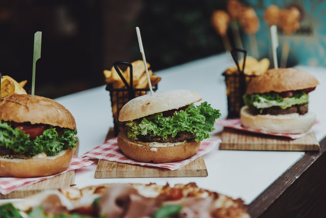

[How to Make Hambuger]
Home
- 브리오슈 번 레시피
- 햄버거 패티 레시피
- 햄버거 소스 레시피
Brioche bun recipe
[재료(9개 분량)]
- 밀가루(강력분) 350g
- 계란 180g(2.5개)
- 우유 75g
- 설탕 40g
- 소금 10g
- 드라이 이스트 8g
- 버터 90g
[방법]
- 계란, 우유, 설탕, 이스트를 넣고 섞는다.
- 밀가루를 붓고 섞은 뒤, 버터와 소금을 넣어 치댄다.
- 반죽을 펴서 1시간동안 냉장실에 숙성한다.
- 유산지 위에 반죽을 80g씩 나눠 둥글게 모양을 잡고 실온에서 2시간 숙성한다.
- 부푼 반죽에 계란 물을 바르고 깨를 올려 180도 오븐에 13분 굽는다.
